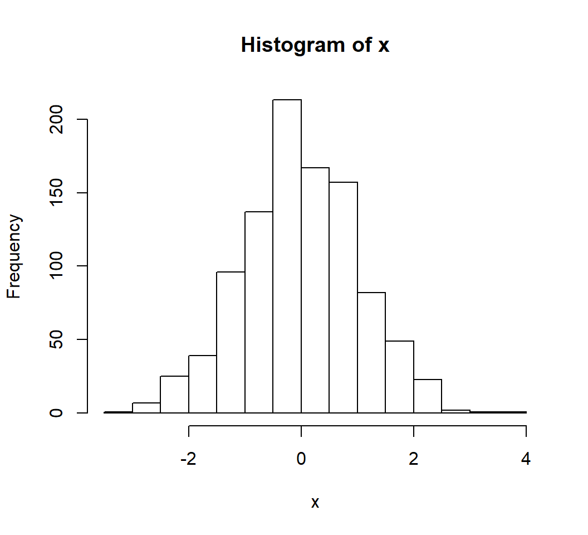
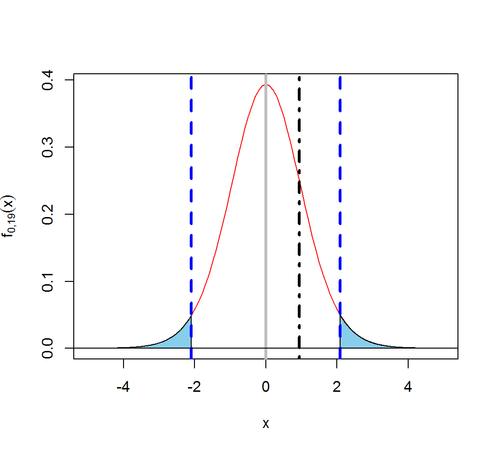

Stat 435 Lab Notes 1a
Xiongzhi Chen
Washington State University

Samples and summary statistics
Samples from Gaussian r.v.’s
Generate a sample from a Gaussian random variable (r.v.). Basic syntax:
rnorm(n, mean = 0, sd = 1)n: sample sizemeanandsd: vector of means and vector of standard deviations
Note: mean and sd can be specified by user.
Samples from Gaussian r.v.’s
Generate a sample of size 10 from the standard Gaussian random variable:
> rnorm(4)
[1] -0.6239344 0.1986848 -0.4831517 -1.3952643
> rnorm(4)
[1] 1.5383104 -0.4498510 -0.3263053 -0.7748334
> set.seed(123)
> rnorm(4)
[1] -0.56047565 -0.23017749 1.55870831 0.07050839
> set.seed(123)
> rnorm(4)
[1] -0.56047565 -0.23017749 1.55870831 0.07050839
> rnorm(4)
[1] 0.1292877 1.7150650 0.4609162 -1.2650612Note the use of set.seed.
Samples from Gaussian r.v.’s
> set.seed(1)
> x = rnorm(1000,0,1)
> hist(x)
Summary statistics
> set.seed(1)
> x = rnorm(10^3,0,1)
> # sample mean
> mean(x)
[1] -0.01164814
> # sample standard deviation
> # denominator (n-1) used for sd and var
> sd(x)
[1] 1.034916
> # sample variance
> var(x)
[1] 1.071051
> # increase sample size
> y = rnorm(10^5,0,1)
> mean(y)
[1] -0.001946423
> sd(y)
[1] 1.003034What do sample mean and sample variance converge to as sample size increases indefinitely?
Summary statistics
> set.seed(1)
> u = rnorm(10^2,0,1)
> w = rnorm(10^2,0,1)
> # sample covariance; default "pearson"
> cov(u,w)
[1] -0.0008554794
> # sample correlation; default "pearson"
> cor(u,w)
[1] -0.0009943199
> # increase sample size
> x = rnorm(10^4,0,1)
> z = rnorm(10^4,0,1)
> cov(x,z, method = "pearson")
[1] 0.006632814
> cor(x,z)
[1] 0.006609744Why is the absolute value of the sample covariance close to that of the sample correlation in the above example?
Student t test
Test if the mean \(\mu\) of a Gaussian random variable is \(0\):
> set.seed(1)
> n=20
> x = rnorm(n)
> sampleMean = mean(x)
> sampleStd = sd(x)
> tTestValue = sampleMean/(sampleStd/sqrt(n))
> tTestValue
[1] 0.9329813
> # use p-value for decision
> TwoSidedPvalue = 2*pt(-abs(tTestValue),df=19,ncp=0,lower.tail=TRUE)
> TwoSidedPvalue
[1] 0.3625352
> # Type I error level
> alpha = 0.05
> # use critical value for decision
> criticalValue = qt(alpha/2,df=19,ncp=0,lower.tail=FALSE)
> criticalValue
[1] 2.093024
> abs(tTestValue) > criticalValue
[1] FALSEStudent t test
Student t test (mean=0, df=19), decision rule at Type I error level \(\alpha=0.05\), and two-side p-value:

The auto data set
The data set Auto.data contains mpg (miles per gallon) for cars of different numbers of cylinders, engine displacement, horsepower, manufactures (name), etc.
> AD1 = read.table("Auto.data",header = T,na.strings = "?")
> AD1a = na.omit(AD1)
> head(AD1a[,1:5])
mpg cylinders displacement horsepower weight
1 18 8 307 130 3504
2 15 8 350 165 3693
3 18 8 318 150 3436
4 16 8 304 150 3433
5 17 8 302 140 3449
6 15 8 429 198 4341The auto data set
> summary(AD1a)
mpg cylinders displacement
Min. : 9.00 Min. :3.000 Min. : 68.0
1st Qu.:17.00 1st Qu.:4.000 1st Qu.:105.0
Median :22.75 Median :4.000 Median :151.0
Mean :23.45 Mean :5.472 Mean :194.4
3rd Qu.:29.00 3rd Qu.:8.000 3rd Qu.:275.8
Max. :46.60 Max. :8.000 Max. :455.0
horsepower weight acceleration
Min. : 46.0 Min. :1613 Min. : 8.00
1st Qu.: 75.0 1st Qu.:2225 1st Qu.:13.78
Median : 93.5 Median :2804 Median :15.50
Mean :104.5 Mean :2978 Mean :15.54
3rd Qu.:126.0 3rd Qu.:3615 3rd Qu.:17.02
Max. :230.0 Max. :5140 Max. :24.80
year origin name
Min. :70.00 Min. :1.000 amc matador : 5
1st Qu.:73.00 1st Qu.:1.000 ford pinto : 5
Median :76.00 Median :1.000 toyota corolla : 5
Mean :75.98 Mean :1.577 amc gremlin : 4
3rd Qu.:79.00 3rd Qu.:2.000 amc hornet : 4
Max. :82.00 Max. :3.000 chevrolet chevette: 4
(Other) :365 License and session Information
> sessionInfo()
R version 3.5.0 (2018-04-23)
Platform: x86_64-w64-mingw32/x64 (64-bit)
Running under: Windows 7 x64 (build 7601) Service Pack 1
Matrix products: default
locale:
[1] LC_COLLATE=English_United States.1252
[2] LC_CTYPE=English_United States.1252
[3] LC_MONETARY=English_United States.1252
[4] LC_NUMERIC=C
[5] LC_TIME=English_United States.1252
attached base packages:
[1] stats graphics grDevices utils datasets methods
[7] base
other attached packages:
[1] knitr_1.21
loaded via a namespace (and not attached):
[1] compiler_3.5.0 magrittr_1.5 tools_3.5.0
[4] htmltools_0.3.6 revealjs_0.9 yaml_2.2.0
[7] Rcpp_1.0.0 stringi_1.2.4 rmarkdown_1.11
[10] stringr_1.3.1 xfun_0.4 digest_0.6.18
[13] evaluate_0.12